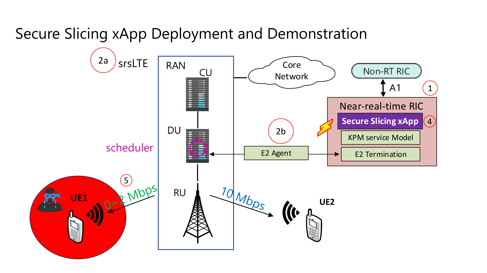
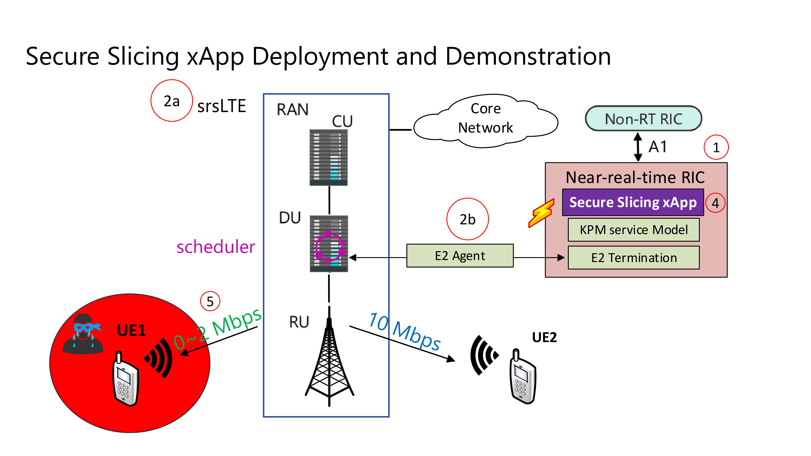

Day 1 - Secure Slicing xApp
Table of Contents
 


Prerequisites
System Requirements
OS: Ubuntu Desktop 20.04 LTS (Focal Fossa) Baremetal Preferred
CPU(s): 12 vCPUs (Threads)
RAM: 16 GB minimum
Storage: 100 GB
Install packages
sudo apt update -y
sudo apt install git vim tmux build-essential cmake libfftw3-dev libmbedtls-dev libboost-program-options-dev libconfig++-dev libsctp-dev libtool autoconf gnuradio python3-pip iperf3 libzmq3-dev -y
For this Workshop, it is recommended to use tmux to be able to manage many terminal sessions at once. Here is a cheatsheet for how to use tmux

Setup
Setup - Near-Realtime RIC
Clone OAIC and Install Submodules
cd ~/
git clone https://github.com/openaicellular/oaic.git
cd oaic
git submodule update --init --recursive --remote
Install Kubernetes, Docker, and Helm
cd ~/oaic/RIC-Deployment/tools/k8s/bin
./gen-cloud-init.sh
sudo ./k8s-1node-cloud-init-k_1_16-h_2_17-d_cur.sh
You can check if all the pods in the Kubernetes Cluster are in “Running” state by using,
sudo kubectl get pods -A
One time setup for Influxdb
Create a ricinfra namespace
sudo kubectl create ns ricinfra
Install the nfs-common package for Influxdb setup
sudo helm install stable/nfs-server-provisioner --namespace ricinfra --name nfs-release-1
sudo kubectl patch storageclass nfs -p '{"metadata": {"annotations":{"storageclass.kubernetes.io/is-default-class":"true"}}}'
sudo apt install nfs-common -y
Tip
When the RIC platform is undeployed, the ricinfra namespace will also be removed. So, you will need to run the one-time setup procedure again when re-deploying the RIC.
Pull Modified E2 docker image
You’re required a local docker registry to host docker images. You can create one using this command:
sudo docker run -d -p 5001:5000 --restart=always --name ric registry:2
Pull the E2 termination docker image from the OAIC’s DockerHub and retagging it to be hosted in the local registry
sudo docker pull oaic/e2:5.5.0
sudo docker tag oaic/e2:5.5.0 localhost:5001/ric-plt-e2:5.5.0
sudo docker push localhost:5001/ric-plt-e2:5.5.0
Deploy Near-Realtime RIC
Deploy the Near-Realtime RIC with the commands below
cd ~/oaic/RIC-Deployment/bin
sudo ./deploy-ric-platform -f ../RECIPE_EXAMPLE/PLATFORM/example_recipe_oran_e_release_modified_e2.yaml
Use this command to check all the Kubernetes pods
sudo kubectl get pods -A
Warning
Make sure that All pods (besides tiller generator) are in the 1/1 Running state before proceeding
Setup - Srslte with E2 Agent
cd ~/oaic/asn1c
git checkout velichkov_s1ap_plus_option_group
autoreconf -iv
./configure
make -j`nproc`
sudo make install
sudo ldconfig
cd ..
cd ~/oaic
git clone https://github.com/openaicellular/srslte-e2
cd srslte-e2
rm -rf build
mkdir build
export SRS=`realpath .`
cd build
cmake ../ -DCMAKE_BUILD_TYPE=RelWithDebInfo \
-DRIC_GENERATED_E2AP_BINDING_DIR=${SRS}/e2_bindings/E2AP-v01.01 \
-DRIC_GENERATED_E2SM_KPM_BINDING_DIR=${SRS}/e2_bindings/E2SM-KPM \
-DRIC_GENERATED_E2SM_GNB_NRT_BINDING_DIR=${SRS}/e2_bindings/E2SM-GNB-NRT
make -j`nproc`
sudo make install
sudo ldconfig
sudo srslte_install_configs.sh user --force
Setup - Nginx Web Server
For this workshop Nginx web server is required to setup a web server for hosting xApp configuration files for xApp deployment
First install Nginx package
sudo apt-get install nginx -y
Check to see if Nginx is in the active (running) state
sudo systemctl status nginx
Unlink the default Configuration file and check if it is unlinked
cd /etc/nginx/sites-enabled
sudo unlink default
cd ../
Now we create some directories which can be accessed by the server and where the config files can be hosted
cd ../../var/www
sudo mkdir xApp_config.local
cd xApp_config.local/
sudo mkdir config_files
Create a Custom Configuration File and define file locations
cd ../../../etc/nginx/conf.d
sudo vim xApp_config.local.conf
Paste the following content in the conf file.
server {
listen 5010 default_server;
server_name xApp_config.local;
location /config_files/ {
root /var/www/xApp_config.local/;
}
}
Save the configuration file and check if there are any errors in the configuration file.
sudo nginx -t
Setup - Secure Slicing xApp
Modify Srslte
You will need to modify srslte to be able to connect with 2 user equipments (UEs). To do this open the user_db.csv file with your preferred text editor
sudo -i
cd .config/srslte
vim user_db.csv
Replace these lines of code with text given below. This allows the ENB to be able to connect with 2 UEs. Format of these lines: “Name, Auth, IMSI, Key, OP_Type, OP/OPc, AMF, SQN, QCI, IP_alloc”.
ue2,xor,001010123456780,00112233445566778899aabbccddeeff,opc,63bfa50ee6523365ff14c1f45f88737d,8000,000000001635,7,dynamic
ue1,xor,001010123456789,00112233445566778899aabbccddeeff,opc,63bfa50ee6523365ff14c1f45f88737d,9001,00000000131b,7,dynamic
Exit out of sudo once you are done editing the file
exit
Installing SSxApp
Clone down the SS-xApp
cd ~/oaic
git clone https://github.com/openaicellular/ss-xapp.git
Create a symlink from the xApp’s config file. This can be replaced by another symlink in the future. Reload Nginx once this has been done.
cd ~/oaic/ss-xapp
sudo cp config-file.json /var/www/xApp_config.local/config_files/
sudo systemctl reload nginx
Now we are going to build the xapp from the DockerFile.
cd ~/oaic/ss-xapp
sudo docker build . -t xApp-registry.local:5008/ss:0.1.0
Paste the following in the ss-xapp-onboard.url file located in the ss-xapp directory. Substitute the <machine_ip_addr> with the IP address of your machine. You can find this by pasting the command hostname -I | cut -f1 -d' ' in the terminal.
cd ~/oaic/ss-xapp
vim ss-xapp-onboard.url
Paste the following in url file. Remember to change Ip address
{"config-file.json_url":"http://<machine_ip_addr>:5010/config_files/config-file.json"}
Setup - 5G Network
Terminal 1: Start the Core Network/Add UEs to Network Namespace
sudo ip netns add ue1
sudo ip netns add ue2
sudo ip netns list
sudo srsepc
Terminal 2: Set up Environment Variables and Base Station
export E2NODE_IP=`hostname -I | cut -f1 -d' '`
export E2NODE_PORT=5006
export E2TERM_IP=`sudo kubectl get svc -n ricplt --field-selector metadata.name=service-ricplt-e2term-sctp-alpha -o jsonpath='{.items[0].spec.clusterIP}'`
sudo srsenb --enb.n_prb=100 --enb.name=enb1 --enb.enb_id=0x19B \
--rf.device_name=zmq --rf.device_args="fail_on_disconnect=true,tx_port=tcp://*:2000,rx_port=tcp://localhost:2009,id=enb,base_srate=23.04e6" --ric.agent.remote_ipv4_addr=${E2TERM_IP} --log.all_level=warn --ric.agent.log_level=debug --log.filename=stdout --ric.agent.local_ipv4_addr=${E2NODE_IP} --ric.agent.local_port=${E2NODE_PORT} --slicer.enable=1 --slicer.workshare=0
Warning
Make sure you can see the eNB have a RIC State Establish message as shown in the image below before proceeding.

Note
If you are not getting a RIC State Established message, you need to restart the e2term-alpha pod by using the command: sudo kubectl delete pod -n ricplt -l app=ricplt-e2term-alpha. If that still doesn’t work, undeploy and redeploy the near-realtime RIC.
Terminal 3: Set up the first UE
sudo srsue \
--rf.device_name=zmq --rf.device_args="tx_port=tcp://*:2010,rx_port=tcp://localhost:2300,id=ue,base_srate=23.04e6" --usim.algo=xor --usim.imsi=001010123456789 --usim.k=00112233445566778899aabbccddeeff --usim.imei=353490069873310 --log.all_level=warn --log.filename=stdout --gw.netns=ue1
Terminal 4: Set up the second UE
sudo srsue \
--rf.device_name=zmq --rf.device_args="tx_port=tcp://*:2007,rx_port=tcp://localhost:2400,id=ue,base_srate=23.04e6" --usim.algo=xor --usim.imsi=001010123456780 --usim.k=00112233445566778899aabbccddeeff --usim.imei=353490069873310 --log.all_level=warn --log.filename=stdout --gw.netns=ue2
Terminal 5: Run the Gnuradio script
cd ~/oaic/ss-xapp
python3 two_ue.py
Warning
Make sure the UEs are connected with an Ip address before proceeding
Note
Execute the next commands each in a separate terminal
Terminal 6/7: Set up iperf3 test on the server side
iperf3 -s -B 172.16.0.1 -p 5006 -i 1
iperf3 -s -B 172.16.0.1 -p 5020 -i 1
Note
Execute the next commands each in a separate terminal
Terminal 8/9: Set up iperf3 test on the client side
We add an additional bandwidth argument “-b xxM” on each iperf3 test on client side to create a scenario of UEs trying to access more or less of resources on the network. If a UE surpasses the pre-determined threshold for amount of data packets transmitted, it is considered as malicious by the SS xApp.
sudo ip netns exec ue1 iperf3 -c 172.16.0.1 -p 5006 -i 1 -t 36000 -R -b 40M
sudo ip netns exec ue2 iperf3 -c 172.16.0.1 -p 5020 -i 1 -t 36000 -R -b 10M
You should notice traffic flow on both the server and client side for both UEs.
Deploying the SS xApp
cd ~/oaic/ss-xapp
export KONG_PROXY=`sudo kubectl get svc -n ricplt -l app.kubernetes.io/name=kong -o jsonpath='{.items[0].spec.clusterIP}'`
export E2MGR_HTTP=`sudo kubectl get svc -n ricplt --field-selector metadata.name=service-ricplt-e2mgr-http -o jsonpath='{.items[0].spec.clusterIP}'`
export APPMGR_HTTP=`sudo kubectl get svc -n ricplt --field-selector metadata.name=service-ricplt-appmgr-http -o jsonpath='{.items[0].spec.clusterIP}'`
export E2TERM_SCTP=`sudo kubectl get svc -n ricplt --field-selector metadata.name=service-ricplt-e2term-sctp-alpha -o jsonpath='{.items[0].spec.clusterIP}'`
export ONBOARDER_HTTP=`sudo kubectl get svc -n ricplt --field-selector metadata.name=service-ricplt-xapp-onboarder-http -o jsonpath='{.items[0].spec.clusterIP}'`
export RTMGR_HTTP=`sudo kubectl get svc -n ricplt --field-selector metadata.name=service-ricplt-rtmgr-http -o jsonpath='{.items[0].spec.clusterIP}'`
curl -L -X POST "http://$KONG_PROXY:32080/onboard/api/v1/onboard/download" --header 'Content-Type: application/json' --data-binary "@ss-xapp-onboard.url"
curl -L -X GET "http://$KONG_PROXY:32080/onboard/api/v1/charts"
curl -L -X POST "http://$KONG_PROXY:32080/appmgr/ric/v1/xapps" --header 'Content-Type: application/json' --data-raw '{"xappName": "ss"}'
Warning
If you are repeating an experiement, you may want to restart the pod using the command below. By doing so, you do not have to undeploy and redeploy the xApp again.
sudo kubectl -n ricxapp rollout restart deployment ricxapp-ss
Running the xApp
Terminal 10: In your EPC & eNB server’s terminal, print the logs for the SS xApp
Note
The SS xApp has to be deployed in order for this to work.
sudo kubectl logs -f -n ricxapp -l app=ricxapp-ss
Terminal 11: Now run the test script with the following commands on a separate terminal.
cd ~/oaic/ss-xapp
sudo chmod +x zmqtwoue.sh
sudo ./zmqtwoue.sh
After a short time you can observe through the logs that UE1 will be considered malicious and moved to a different slice. You also observe the traffic exchange for UE1 will significantly decrease.
Note
To run the script again, you have to restart the SS xApp and redeploy the network again.
sudo kubectl -n ricxapp rollout restart deployment ricxapp-ss